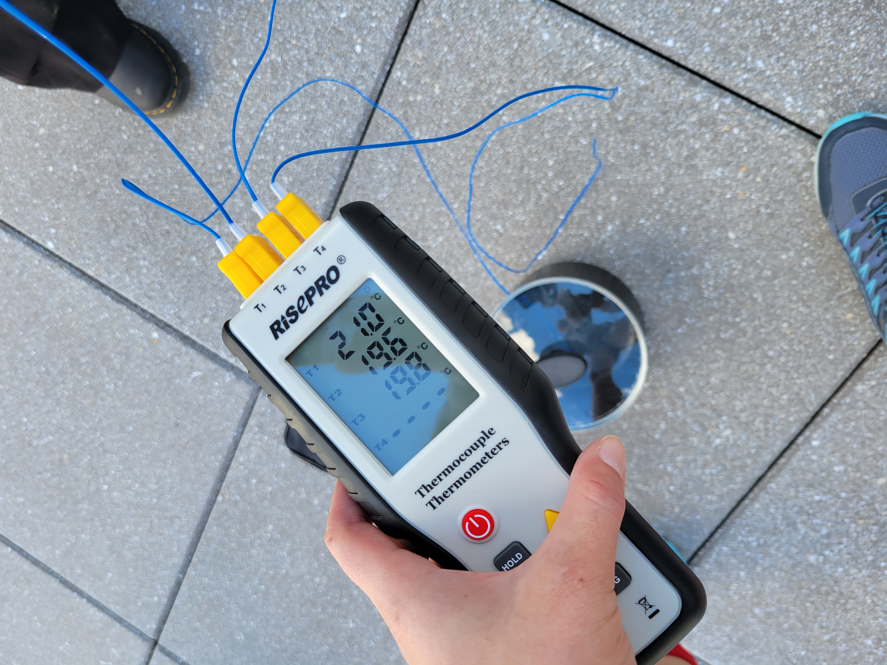
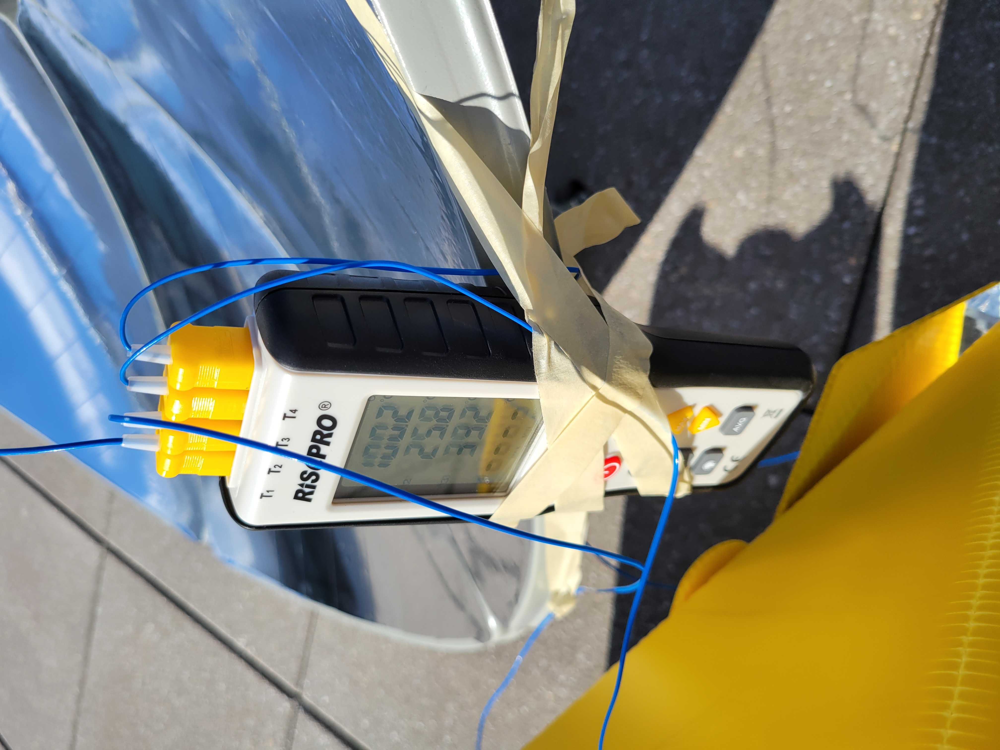
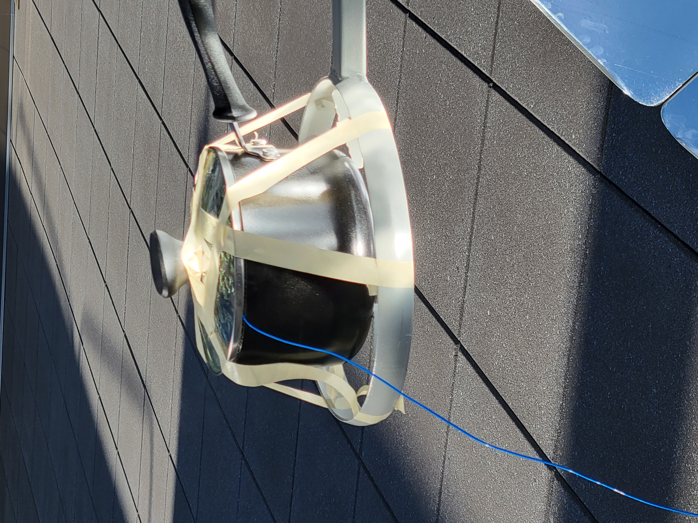
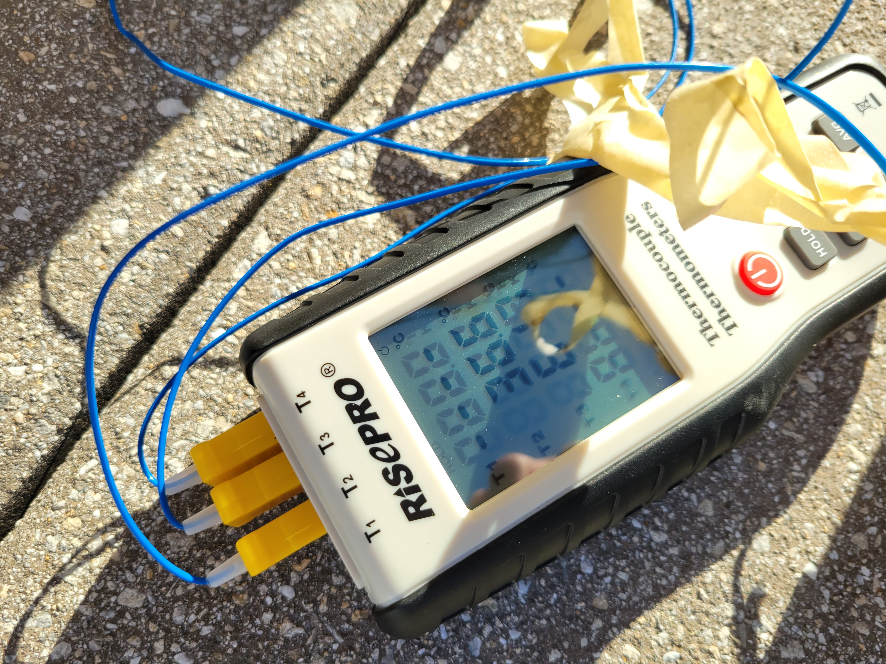

## Week 4
### Monday
In Monday’s class, I was with the group that tested the three purchased solar concentrators on top of Building 31 on a sunny day. We learned that the efficiency of the parabolic dish concentrator was quite substantial. Starting at around 3:49 PM, the starting temperatures for each water container is shown below. In only about 13 minutes, the water held by the dish concentrator already reached boiling temperature while the other two concentrators were only at 25.8 (shabby yellow one) and 39.2 (cylindrical one) degrees C respectively. A picture of the water reaching its boiling temperature is shown below. We eventually removed the large one because it had already reached boiling, and the others only managed to peak around 36.6 and 61.7 degrees C even after nearly an hour in the Sun.
Start:

Assembly:
<img src="./20220926_155602.jpg" alt="Boiling" width="500">
Reached Boil:

Water Boiling:

Peak Temperatures:

### Wednesday
I was unable to attend Wednesday's class.